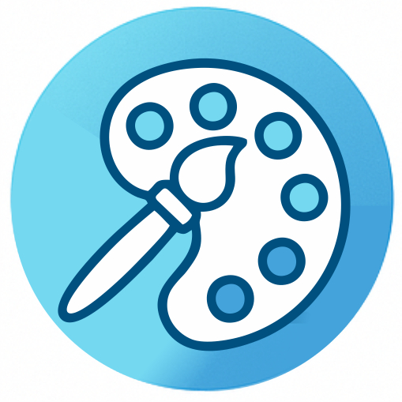
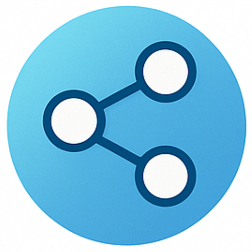

Vida y Obra de Santiago Roth
Kaspar Jacob Roth (14 de Junio 1850 - 4 de Agosto 1924), conocido como Santiago Roth, fue un destacado naturalista, paleontólogo y geólogo suizo-argentino cuyas contribuciones marcaron un hito en el estudio de los mamíferos fósiles de América del Sur.
Biografía
La vida de Santiago Roth, desde su nacimiento en Suiza hasta su consolidación como una de las figuras más importantes de la paleontología argentina.
Obra científica
Explora el legado científico de Santiago Roth a través de sus publicaciones, catálogos y la bibliografía sobre su trabajo.
Pretiosorum Fossilium in regionibus Reipublicae Argentinensis. Americae Meridionalis. Nuper repertorum et ad proprietatem. Genua: Carolus F. Hofer & Soc. Pp. 8
Ver catálogoSan Nicolás. Buenos Aires: Imp. y Lit. de El Centinela del Norte de San Nicolás. Pp. 12.
Fossiles de la Pampa. Amérique du Sud. Catalogue N° 2. San Nicolás. République Argentine. Genova: Tipografía del R. Istituto Sordo-Mutti. Pp. 28.
Fossilien aus der argentinischen Republik. Catalog N°3. San Nicolas (handwritten list).
Zeitschrift der Deutschen Geologischen Gesellschaft. XL Band. Berlin: Wilhelm Hertz Bessersche Buchhandlung. Pp. 20.
Fossiles de la Pampa. Amérique du Sud. Catalogue N° 5. Zurich: Jean Meyer. Pp. 16.
Ver catálogoFossilien aus der Pampasformation. Catalog N°6. Zurich: Zürcher & Furrer. Pp. 14.
Roth en el paleoarte
El paleoartista Jorge Blanco ha interpretado el trabajo de Santiago Roth, recreando visualmente sus descubrimientos y teorías sobre la estratigrafía pampeana.
Las obras de Blanco representan las tres divisiones del pampeano que Roth realizó a partir de sus inspecciones en las excavaciones del Frigorífico La Elisa en San Nicolás. Estas divisiones - inferior, medio y superior - marcaron un hito en la comprensión de la geología regional.
Nivel Inferior
Representación de la fauna del nivel inferior según las descripciones de Roth, con megafauna característica del Pleistoceno.
Nivel Medio
Recreación del ambiente y especies encontradas en el nivel medio de la formación pampeana.
Nivel Superior
Interpretación artística del nivel superior con los hallazgos más recientes documentados por Roth.
Familia y Legado
Reconocimiento a la familia Roth, heredera de su memoria y legado que ha donado al museo.
Árbol Familiar
Esposa
Elisabeth Schütz (procedía de Ranflüh, cantón de Berna, Suiza).
Hijos
Matilde Ursula (1874-1913)
Luisa (1875-19xx)
Emilie (1877-19xx)
Karl (Carlos) (1879-1950)
Martha (1881-1917)
Ricardo (1883-1947)
Dora (1885-1962)
Elvira (1888-1975)
Descendientes Actuales
Autora de una biografía familiar sobre Santiago Roth. Ha contribuido con relatos familiares y documentos personales.
Proporcionó el volumen de material de archivo, documentos y fotografías familiares para la investigación.
Proporcionó los vínculos y contactos iniciales con la familia extendida. Su hijo Santiago quiere estudiar paleontología.
Memorial
Sala Santiago Roth
La Sala Santiago Roth en el Museo de Ciencias Naturales "P. Antonio Scasso" de San Nicolás de los Arroyos alberga una importante colección de fósiles y documentos relacionados con la vida y obra del destacado paleontólogo.
Esta sala fue posible gracias a las donaciones de la familia Roth y al trabajo conjunto con investigadores del Museo de La Plata y otras instituciones.
Colecciones Destacadas
Fósiles
Ejemplares de la formación pampeana recolectados por Roth
Documentos
Cartas, manuscritos y notas de campo originales
Fotografías
Imágenes de sus expediciones y vida personal
Herramientas
Equipos utilizados en sus investigaciones
Contacto y Visitas
Dirección y Horarios
Museo de Ciencias Naturales A. Scasso
Calle Don Bosco Nº580
B2900KIL San Nicolás de los Arroyos
Buenos Aires, Argentina
Horarios: Lunes a Jueves 9:00 a 16:00 hs
Contacto
Visitas guiadas:
visitas@museoscasso.com.ar
Consultas generales:
info@museoscasso.com.ar
Teléfono:
+54 236 442-2222